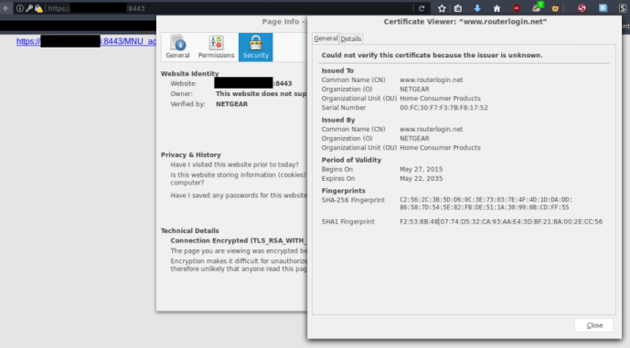
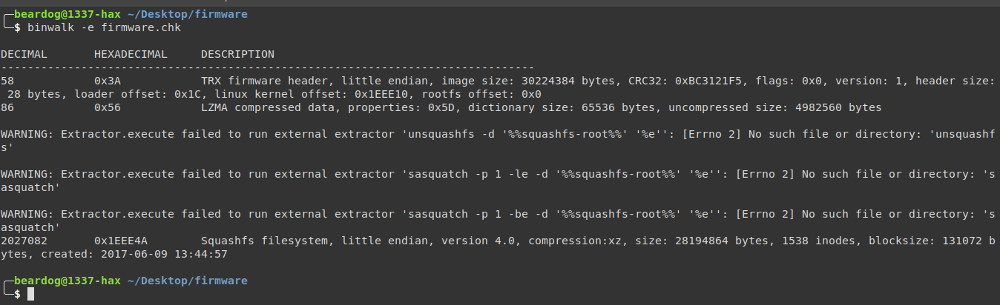

Tls Key Reuse On Popular Router Models
Recently I have been researching security of consumer Internet and WiFi routers.
I knew that key reuse was an issue in device firmware, but the issue is more widespread in routers than I would have guessed. Default & current (at time of writing) versions of firmware for most if not all Netgear, Linksys, and perhaps other router brands reuse TLS keys for their web management interface.
TLS for remote router management is already 'broken' since certificates are not usually valid, and few users understand how to manually verify certificate fingerprints. Even if users verify fingerprints, they will have a false sense of security since reused TLS keys provide zero protection, while still appearing to be secure.
It would be easy to perform a MITM attack against an administrator accessing their router remotely, which could be a disaster for internal networks.
Checking if a router is vulnerable
Easy & Legal Method
Check the fingerprint using openssl or your browser, reinstall the firmware, and check again. If they match, your router almost certainly has a baked in key.

Binwalk method
Binwalk is a neat CLI program for reverse engineering binary blobs (especially firmware images). I find it works well on most router images.
Note: this method is potentially illegal depending on the software license of the firmware and applicable law
-
Install Binwalk
-
Obtain a firmware image you want to check
-
Open a terminal and enter
binwalk -e firmware-image-filename

After a few seconds, Binwalk should have extracted any files it found to a relative directory.
Sift through the files, look for .pem and .key files. If they are present, then the router probably uses them rather than generating new ones at setup/first boot, as it should.
Conclusion
There is little incentive for router manufactuers to provide secure firmware, especially for outdated devices. It is in the best interest of users to install trusted open source firmware, such as OpenWrt, and keep it up to date.